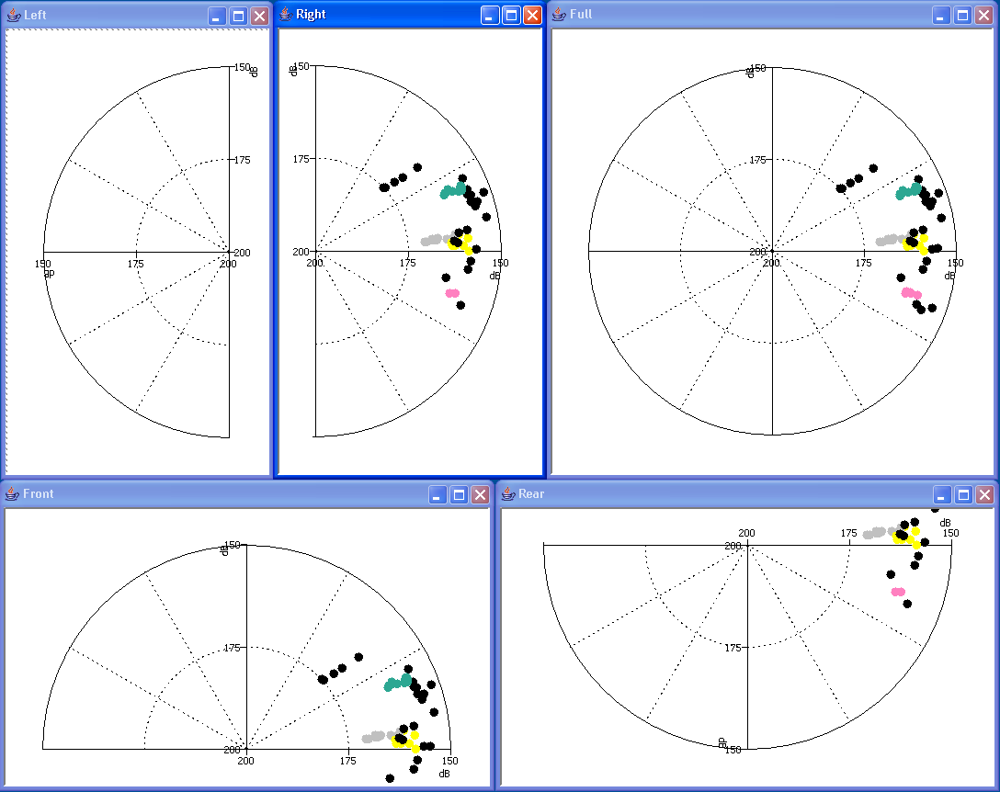

Radar display windows can be used to display range and bearing information to
detected sounds. Alternatively, when range information is not available,
amplitude information can be displayed on the radial axis as a proxy for range. On a radar display the centre of the display is the midpoint of the array from which bearings are being calculated.
Since many detectors, particularly those using simple linear hydrophones, produce ambiguous bearing information, it is possible to display either the full display or only one half of the display.

Next: Creating a Radar Display